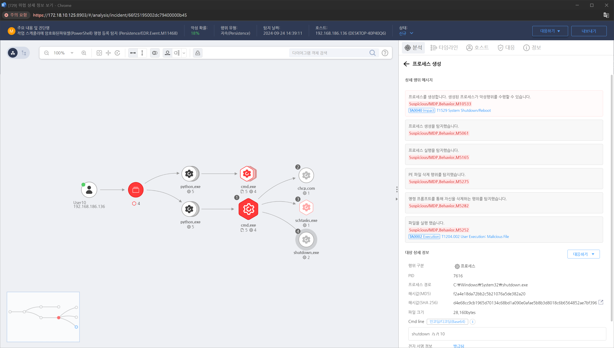

MITRE ATT&CK 액션을 기준으로 대응 방안을 작성
프로세스 실행 인자 모니터링을 통해 "shutdown" 명령 행위를 탐지합니다.

시스템이 종료되거나 재부팅된 시점을 파악하기 위해 관련 이벤트 로그를 분석합니다.
비정상적인 시간대에 시스템이 종료되었거나 예상치 못한 시스템 재부팅이 발생한 경우 이를 조사합니다.
재부팅 또는 종료 직전/직후에 시스템에서 발생한 비정상적인 활동을 조사합니다.
시스템을 종료하거나 재부팅한 프로세스를 식별하고 해당 프로세스의 출처와 목적을 조사합니다.
시스템이 종료되기 직전에 파일이 추가되거나 변경된 흔적을 찾습니다. 이는 공격자가 로그를 덮어쓰거나 악성 파일을 설치하기 위해 시스템을 재부팅했을 가능성을 시사할 수 있습니다.
비정상적인 시스템 재부팅이나 종료가 공격자의 행위로 판단되면 해당 시스템을 네트워크에서 격리하여 추가적인 피해 확산을 방지합니다.
시스템을 종료하거나 재부팅한 사용자 계정의 로그인을 확인하고, 비정상적인 시간에 로그인이 발생했는지 또는 권한 상승이 있었는지 조사합니다.
시스템 종료 및 재부팅 이벤트에 대해 실시간 알림을 설정하여, 비정상적인 시스템 종료가 발생할 경우 즉시 경고를 받을 수 있도록 합니다.
시스템 종료 및 재부팅 권한 제한 (Restrict System Shutdown/Reboot Privileges)
모니터링 및 알림 (Monitoring and Alerts)
로그 분석 (Log Analysis)
사용자 계정 관리 (User Account Management)
운영 체제 및 소프트웨어 업데이트 (Operating System and Software Updates)
응용 프로그램 화이트리스트 (Application Whitelisting)
변경 관리 (Change Management)
멀티팩터 인증 (Multi-factor Authentication)
Action 실행시 함꼐 영향을 받는 다른 Techniqes
| ATT&CK |
|---|
| T1529.000 |
| D3FEND |
|---|
| D3-SCA System Call Analysis |
| D3-PM Platform Monitoring |
| D3-SJA Scheduled Job Analysis |